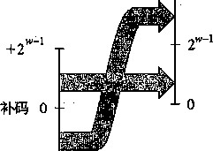
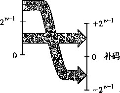

比如说 ， 考虑下面的代码：
short int v = -12345;
unsigned short uv = (unsigned short) v;
printf ("v = %d, uv = 7 0 u\n", v, uv);
在一台釆用补码的机器上，上述代码会产生如下输出：
v = -12345, uv = 53191
我们看到，强制类型转换的结果保持位值不变 ， 只是改变了解释这些位的方式。在图2-14中 我们看到过， - 12 345的16位补码表示与53 191的16位无符号表示是完全一样的。将short int强制类型转换为unsigned short改变数值，但是不改变位表示。
类似地 ， 考虑下面的代码：
unsigned u = 4294967295u; /* UMax_32 */
int tu = (int) u; -
printf("u = %u, tu = %d\n", u, tu);
在一台釆用补码的机器上,上述代码会产生如下输出：
u = 4294967295, tu = -1
从图2-13我们可以看到，对于32位字长来说，无符号形式的4 294 967 295 (f/Max 32 )和补 码形式的-1的位模式是完全一样的。将unsigned int强制类型转换成int,底层的位表示 保持不变。
对大多数C语言的实现而言，处理同样字长的有符号数和无符号数之间相互转换的一般规 则是：数值可能会改变，但是位模式不变。下面我们用更数学化的形式来描述这个规则。既然 52%和幻7；都是双射，它们就有定义明确的逆映射。将定义为幻而将定义 为B2T; 1 。 这些函数给出了一个数值的无符号或者补码的位模式。也就是说，给定0<^<2”范围 内的一个整数A函数C/25 w (x)会给出x的唯一的w位无符号表示。相似地，当;c满足- x < 2 W ~\ 函数：T25 w (jc)会给出jc的唯一的w位补码表示。可以观察到，对于在范围0 < x < 2^ 1 内的值，这两个函数将生成同样的位模式——最高位是0,因此这个位是正权还是负权就没有关 系了。
现在，将函数t/27；定义为C/2r w (x)=^27；a/25 w O))。这个函数的输入是一个0〜2 W -1之 间的数，结果得到一个-2H〜2 W _M之间的值，这里两个数有相同的位模式，除了参数是无 符号的，而结果是以补码表示的 6 类似地，对于-2"- 1 〜2^-1之间的值;c,函数定义为 T 2 U W (X)= B 2 U W ( T 2 B W (X)) 9 生成一个数的无符号表示和x的补码表示相同。
继续我们前面的例子,从图2-14中，我们看到72C/ 16 (-12345)=53191 ，^R U2T^53191)=-12345 0 也就是说，十六进制表示写做 0XCFC7 的16位位模式既是-12 345的补码表示，又是53 191的 无符号表示。类似地，从图2-13我们看到72^/ 32 (-1) = 4 294 967 295,并且Wr 32 (4 294 967 295)= -1。也就是说，无符号表示中的t/Mox有着和补码表示的-1相同的位模式。
接下来，我们看到函数描述了从无符夸数到补码的转换，而T2t/描述的是补码到无符 号的转换。这两个函数描述了在大多数C语言实现中这两种数据类型之间的强制类型转换效果。 ®练习题2.19利用你解答练习题2.17时填写的表格，填写下列描述函数的表格。
X |
T 2 U 4 (X) |
-8 |
|
-3 |
|
-2 |
|
-1 |
|
0 |
|
5 |
为了更好地理解一个有符号数字x和与之对应的无符号数 T2U w (x) 之间的关系，我们可以利 用它们有相同的位表示这一事实，推导出一个数字关系。比较等式（2-1)和等式（2-3),可以 发现对于位模式3?,如果我们计算於t/ w (30 - B2T w (x) 之差，从0到w-2的位的加权和将互相抵 消掉，剩下一个值： B2UJix)-B2Tjx) = XnV 1 —2^ 1 ) = ^^2 W 。这就得到一个关系：幻(7 W (S) = x w . l 2 w + B2T w (x)o 如果令3f = ：T25 w 0c>,我们就得到以下公式
B2UJT2B W (x)) = T2U W (x) = x w . x 2 w + x (2-5)
这个关系对于证明无符号和补码运算之间的关系是很有用的。在x的补码表示中，位Xh决定了 x是否为负，得到
,、fx+2 w , x<0
T2U w (xy\ (2-6)
[Xy X > 0
比如说，图2-15比较了当w = 4时，函数52C/和扣r是如何将数值变成位模式的。对补码来 说，最高有效位是符号位，我们用带向左箭头的条来表示。于无符号数来说，最高有效位有正权 重，我们用带向右箭头的条来表示。从补码变为无符号数，最高有效位的权重从一8变为+8。因此, 补码表示的负数如果看成无符号数，值会增加2 4 =16。因而，—5变成了+11,而—1变成了+15。
2 3 =8
2 2 =4
2°=1 ■
-8-7-6-5-4-3-2- 1 0 1 2 3 4 5 6 7 8 9 10 11 12 13 14 15 16
|
_] 隱 |
—1~1~h— |
—1~f—i—i~i~i~i~i—i~i~i— |
—f—1—1 |
|
|
nil 11 |
圖 |
+16 ► |
||
图2-15比较当w = 4时无符号表示和补码表示（对补码和无符号数来说，
最高有效位的权重分别是-8和+8,因而产生一个差为16)
图2-16说明了函数的一般行为。如图所示，当将一个有符号数映射为它相应的无符号 数时，负数就被转换成了大的正数，而非负数会保持不变。
T 2 W

-2 w ~ l 丄
图2-16从补码到无符号数的转换。函数T2C7将负数转换为大的正数 _练习题2.20请说明在解答练习题2.19时生成的表格中，你是如何将等式（2-6)应用到其中各项的。
反过来看，我们希望推导出一个无符号数w和与之对应的有符号数t/27；( W )之间的关系。如 果设我们得到以下公式
B2T W (U2BM) = U2T w (u) = + u (2-7)
在《的无符号表示中，位〜― 1 决定了《是否大于或者等于2 W '得到
,、fw, xKl^ 1 U 2 ™ = {U- 2\ u>2 w ~ l (2-8)
图2-17说明了这个行为。对于小的数（<从无符号到有符号的转换将保留数字的原 值。对于大的数（>2〜)，数字将被转换为一个负数值。
总结一下，我们考虑无符号与补码表示之间互相转换的结果。对于在0 < jc < 2"- 1 范围之 内的值x而言，我们得到r2t/ w (x)=;c和t/2r w (;c) = jc。也就是说，在这个范围内的数字有相同 的无符号和补码表示。对于这个范围以外的数值，转换需要加上或者减去2'例如，我们有 T2U W (-1) = -l+2 w = UMax w 最靠近0的负数映射为最大的无符号数。在另一个极端，我们
图2-17从无符号数到补码的转换。函数c/2r把大于-1的数字转换为负值
C语言中的有符号数与无符号数
2 w T

可以看到 T2U W (TMinJ = -2^ 1 + 2 W = 2 w ~ l = TMax w + 1——最小的负数映射为一个刚好在补码的正数 范围之外的无符号数。使用图2-14的示例，我们能得到T2CU-12 345) = 65 563+ -12 345 = 53 191。
如图2-8和图2-9所示，C语言支持所有整型数据类型的有符号和无符号运算。尽管C语言 标准没有指定有符号数要釆用某种表示，但是几乎所有的机器都使用补码。通常，大多数数字都 默认为是有符号的。例如，当声明一个像12345或者0xlA2B这样的常量时，这个值就被认为 是有符号的。要创建一个无符号常量，必须加上后缀字符‘U’或者‘11’。例如，12345U或者 0xlA2Bu o
C语言允许无符号数和有符号数之间的转换。转换的原则是底层的位表示保持不变。因此, 在一台釆用补码的机器上，当从无符号数转换为有符号数时，效果就是应用函数C/22；,而从有 符号数转换为无符号数时，就是应用函数72%,其中w表示数据类型的位数。
显式的强制类型转换就会导致转换发生，就像下面的代码：
int tx, ty;
unsigned ux, uy;
3
tx = (int) ux;
uy = (unsigned) ty;
另外，当一种类型的表达式被赋值给另外一种类型的变量时，转换是隐式发生的，就像下面 的代码：
int tx, ty;
unsigned ux, uy;
3
tx = ux; /氺 Cast to signed 氺 /
uy = ty; /* Cast to unsigned */
当用printf输出数值时，分别用指示符％d、%u和％x以有符号十进制、无符号十进制和 十六进制格式输出一个数字。注意printf没有使用任何类型信息，所以它可以用指示符来 输出类型为int的数值 ， 也可以用指示符％d输出类型为unsigned的数值。例如，考虑下面 的代码：
int x = -1;
unsigned u = 2147483648; /* 2 to the 31st */
3
printf("x = %u = %d\n", x, x);
printf("u = %u = %d\n", u, u);
当在一个32位机器上运行时，它的输出如下： x = 4294967295 = -1 u = 2147483648 = -2147483648
在这两种情况下，printf首先将这个字当作一个无符号数输出，然后把它当作一个有符号 数输出。以下是实际运行中的转换函数：r2t/ 32 (-l) = UMax 32 = 2 32 -1和C/2r 32 (2 31 ) = 2 31 - 2 32 = -2 31 = TMin no
由于C语言对同时包含有符号和无符号数表达式的这种处理方式，出现了一些奇特的行 为。当执行一个运算时，如果它的一个运算数是有符号的而另一个是无符号的，那么C语言会 隐式地将有符号参数强制类型转换为无符号数，并假设这两个数都是非负的，来执行这个运算。 就像我们将要看到的，这种方法对于标准的算术运算来说并无多大差异，但是对于像<和> 这 样的关系运算符来说，它会导致非直观的结果。图2-18展示了一些关系表达式的示例以及它 们得到的求值结果，这里假设使用的是一台釆用补码的32位机器。考虑比较式_1<0U。因为 第二个运算数是无符号的，第一个运算数就会被隐式地转换为无符号数，因此表达式就等价于 42949672951K0U (回想T2【/ w (-1) = 这个答案显然是错的。其他那些示例也可以通
过相似的分析来理解。
表达式 |
类 型 |
求 值 |
0 == ou |
无符号 |
1 |
-1 < 0 |
有符号 |
1 |
-1 < ou |
无符号 |
0* |
2147483647 > -2147483647-1 |
有符号 |
1 |
2147483647U > -2147483647-1 |
无符号 |
0* |
2147483647 > (int) 2147483648U |
有符号 |
1* |
-1 > -2 |
有符号 |
1 |
(unsigned) -1 > -2 |
无符号 |
1 |
图 2-18 C 语言的升级规则的效果
注：非直观的情况标注了 ‘*’。当一个运算数是无符号的时候，另一个运算数也被隐式强制转换为无符号。将 TMm n 写为-2147483647-1的原因请参见网络旁注DATA:TMIN。
_练习题2.21假设在采用补码运算的32位机器上对这些表达式求值，按照图2-18的格式填写下表, 描述强制类型转换和关系运算的结果。，
表达式 |
类 型 |
求 值 |
-2147483647-1 == 2147483648U |
||
-2147483647-1 < 2147483647 |
||
-2147483647-1U < 2147483647 |
||
-2147483647-1 < -2147483647 |
||
-2147483647-1U < -2147483647 |
网络旁注DATATMIN C语言中 TMin 的写法
在图2-18和练习题2.21中，我们很小心地将rM« 32 写成-214748364 7 _1。为什么不简单 地写成-2147483648或者0x80000000 ?看一下C头文件limits.h,注意到它们使用了跟 我们写 TMn 32 和rMox 32 类似的方法：
/* Minimum and maximum values a f signed int 1 can hold. */
#define INT.MAX 2147483647
.#define INT.MIN (-INT—MAX 一 1)
不幸的是，补码表示的不对称性和C语言转换规则之间这种奇怪的交互，迫使我们用这种 不寻常的方式来写 TMin Z20 虽然理解这个问题需要我们钻研C语言标准的一些比较隐晦的角落， 但是它能够帮助我们充分领会整数数据类型和表示的一些细微之处。
2.2.6扩展一个数字的位表示
一种常见的运算是在不同字长的整数之间转换，同时又保持数值不变。当然，当目标数据类 型太小以至于不能表示想要的值时，这根本就是不可能的。然而，从一个较小的数据类型转换 到一个较大的类型，这应该总是可能的。将一个无符号数转换为一个更大的数据类型，我们只 需要简单地在表示的幵头添加0,这种运算称为零扩展（zero extension)。将一个补码数字转换 为一个更大的数据类型可以执行符号扩展（sign extension),规则是在表示中添加最高有效位的 值的副本。由此可知,如果我们原始值的位表示为[x^, x w _ 2 ,…，jc 0 ],那么扩展后的表示就为 K-i,…，x w _ ly 〜_ 2 ，…，x。]。（我们用浅灰色标出符号位来突出它们在符号扩展中 的角色。）
例如，考虑下面的代码：
/* -12345 */ sx; /* 53191 */
/* -12345 */ /* 53191 */
short sx = -12345; unsigned short usx = int x = sx; unsigned ux = usx;
printf("sx = %d:\t", sx);
show_bytes((byte_pointer) fesx, sizeof(short)); printf("usx = %u:\t", usx);
9
10
•11
12
13
show.bytes((byte_pointer) &usx, sizeof(unsigned short));
printf("x = %d:\t", x);
show_bytes((byte_pointer) &x, sizeof(int));
printf("ux = %u:\t", ux);
show_bytes((byte_pointer) &ux, sizeof(unsigned));
在釆用补码表示的32位大端法机器上运行这段代码时，打印出如下输出
SX
USX
|
-12345: |
cf |
c7 |
||
|
53191: |
cf |
c7 |
||
|
-12345: |
ff |
ff |
cf |
c7 |
|
53191: |
00 |
00 |
cf |
c7 |
我们看到，尽管-12 345的补码表示和53 191的无符号表示在16位字长时是相同的，但是在 32位字长时却是不同的。特别地，- 12 345的十六进制表示为(^^??厂0?07,而53 191的十六进 制表示为OxOOOOCFC 7 。前者使用的是符号扩展一最开头加了 16位，都是最高有效位1,表示 为十六进制就是OxFFFF。后者开头使用16个0来扩展，表示为十六进制就是0x0000。
图2-19给出了从字长w = 3到vv = 4的符号扩展的结果。位向量[101]表$值—4+1 =—3。对它应 用符号扩展，得到位向量[1101],表示的值一8 + 4+1 =-3。我们可以看到，对于w=4,最高两位的组 合值是一8+4=~4,与位的值相同。类_,位向量[111]和[1111]都^^值一1。
如何证明符号扩展工作是否正确呢？我们想要证明的是 ..
众([A w x 0 ]) = B2T m ([x u ^ h x w _ 2i ..., X 0 ])
y 」
k 次
这里，在表达式的左边，我们增加了 A:位Xd的副本。下面的证明是对免进行的归纳。也就是 说，如果我们能够证明符号扩展一位保持数值不变，那么符号扩展任意位都能保持这种属性。因 此，证明的任务就变为证明以下等式：
B2T w+l {[x w
—\» --1» -^iy—2» • • •，
x 0 ]) = B2T w ([x w _^ h x w _ 2 , ...,又o])
用等式（2-3)展开左边的表达式，得到：
u?—1
T w _[, a w ,—卜 x w _2, . • •，-^o]) = 一〜,丨-12 + > : '.2
/=0
w—2
:--1 + x w ^\2 w 1 + x i^ 1
/=0
w—2
u (2--2^) + ^^
i=0
w—2
■E^ 2/
/=0
我们使用的关键属性是212^=2^。因此，加上一个权值为-2 W 的位，和将一个权值为—2 W 的位转换为一个权值为的位，这两项运算的综合效果就会保持原始的数值。
2 = 4
2°=1 B
8-7-6-5-4-3-2-10 1 2 3 4 5 6 7 8
[ 101 ]
[ 1101 ]
[111]
[ 1111 ]
图2-19从w = 3到w = 4的符号扩展示例。对于w = 4,最高两位组合权重为一8+ 4 ==-4,
与w = 3时的符号位的权重一样
_练习题2.22应用等式(2-3),证明下列每个位向量都是-5的补码表示。
[1011]
[11011]
G. [111011]
可以看到第二个和第三个位向量可以通过对第一个位向量做符号扩展得到。
值得一提的是,从一个数据大小到另一个数据大小的转换，以及无符号和有符号数字之间的 转换的相对顺序能够影响一个程序的行为。考虑下面的代码：
/* -12345 */
/氺 Mystery! */
short sx = -12345; unsigned uy = sx;
printf ("uy = 7 0 u:\t n , uy);
showJbytes((byte_pointer) &uy, sizeof(unsigned));
在一台大端法机器上，这部分代码产生如下输出：
uy = 4294954951: ff ff cf cl
这表明当把short转换成unsigned时，我们先要改变大小，之后再完成从有符号到无符 号的转换。也就是说(unsigned) sx等价于(unsigned) (int) sx,求值得到4294 954 951, 而不等价于（unsigned) (unsigned short) sx,后者求值得到53 191。事实上，这个规贝U 是C语言标准要求的。
_练习题2.23考虑下面的C函数：
int funi(unsigned word) {
return (int) ((word « 24) » 24);
>
int fun2(unsigned word) {
return ((int) word « 24) » 24;
>
假设在一个采用补码运算的32位字长的机器上执行这些函数。还假设有符号数值的右移是算术右移， 而无符号数值的右移是逻辑右移。
A.填写下表，说明这些函数对几个示例参数的结果。你会发现用十六进制表示来做会更方便，只要记 住十六进制数字8到F的最高有效位等于1。
W |
funl(w) |
fun2 (w) |
0x00000076 |
||
0x87654321 |
||
0x000000C9 |
||
0XEDCBA987 |
B.用语言来描述这些函数执行的有用的计算。
2,2.7截断数字
假设我们不用额外的位来扩展一个数值，而是减少表示一个数字的位数。例如下面代码中这 种情况：
■ 1 int X = 53191;
short sx = (short) x; /* -12345 */
int y = sx; /* -12345 */
在一台典型的32位机器上，当把x强制类型转换为short时，我们就将32位的int截断 为16位的short into就像前面所看到的，这个16位的位模式就是-12 345的补码表示。当 我们把它强制类型转换回int时，符号扩展把高16位设置为1,从而生成-12 345的32位补码 表示。
将一个w位的数，…，jc。]截断为一个位数字时，我们会丢弃高立，得到一 个位向量截断一个数字可能会改变它的值——溢出的一种形式。我们现在 来研究什么样的数值会产生这种情况。对于一个无符号数字x,截断它到A:位的结果就相当于计 算xmod2 A 。通过对等式（2-1)应用取模运算就可以得到：
B2U w ([x w _ h x w _ 2 , ...，x 0 ]) mod 2 k ：
mod
./=0 ■ •,k-l _
mod2 /:
J2 X i 2i ./=0 ■
k-i
= J2 X i 21
i=0
= B2U k ([x k _ h x k _ 2 ,…，補
在这段推导中，我们利用的属性是：对于任何 i > h 和Eto 1 x i 2i < Eto 2 i = 2^1< lK
对于一个补码数字 x， 相似的推理表明527； ([x w . l} ‘_ 2 ，…， x 0 ]) mod t = B2U k [x k ^ x A _ 2 ，…，A]。 也就是， x mod 2 k 能够被一个位级表示为[&，•••，x 0 ]的无符号数表示。不过,一般而言，我们将 被截断的数字视为有符号的。这将得到数值 U2T k (x mod 2% 总而言之，无符号数的截断结果是：
B2U k ([x k _ h x k — 2 , ..., x 0 ]) = B2U w ([x w _ h x w _ 2 ,…，尤 0 ]) mod 2 k , (2-9)
而补码数字的截断结果是：
52^([^_1, x k _ 2 , • • • ’ 又o]) = U2T k (B2U w ([x w _ h x w _ 2 , ..., x 0 ]) mod 2 k ) (2-10)
_练习题2.24假设将一个4位数值（用十六进制数字0〜F表示）截断到一个3位数值（用十六进制数
根据那些位模式的无符号和补码解释，说明这种截断对某些情况的结果。
十六进制 |
无符号 |
补码 |
|||
原始值 |
截断值 |
原始值 |
截断值 |
原始值 |
截断值 |
0 |
0 |
0 |
0 |
||
2 |
2 |
2 |
2 |
||
9 |
1 |
9 |
.. — —1 |
||
B |
3 |
11 |
-5 |
||
F |
7 |
15 |
-1 |
||
解释如何将等式（2-9)和等式（2-10)应用到这些示例上。
2.2.8关于有符号数与无符号数的建议
就像我们看到的那样，有符号数到无符号数的隐式强制类型转换导致了某些非直观的行为。而 这些非直观的特性经常导致程序错误，并且这种包含隐式强制类型转换细微差别的错误很难被发现。 因为这种强制类型转换是在代码中没有明确指示的情况下发生的，程序员经常忽视了它的影响。 下面两个练习题说明了某些由于隐式强制类型转换和无符号数据类型造成的细微错误。
_练习题2.25考虑下列代码，这段代码试图计算数组a中所有元素的和，其中元素的数量由参数length给出。
/* WARNING: This is buggy code */ '
float sum_elements(float a[], unsigned length) { int i;
float result = 0;
for (i = 0; i <= length^1; i++) result += a[i]; return result;
当参数length等于0时，运行这段代码应该返回0.0。但实际上，运行时会遇到一个存储器错误。 请解释为什么会发生这样的情况，并且说明如何修改代码。
_练习题2.26现在给你一个任务，写一个函数用来判定一个字符串是否比另一个更长。前提是你要用 字符串库函数strlen，它的声明如下：
/* Prototype for library function strlen */ size_t strlen(const char *s);
最开始你写的函数是这样的：
/* Determine x^rlietlier string s is longer than string t */
卜 WARNING: This function is buggy */ int strlonger(char *s, char *t) {
return strlen(s) - strlen(t) >0;
}
当你在一些示例数据上测试这个函数时，一切似乎都是正确的。进一步研究发现在头文件stdio.h 中数据类型size一t是定义成unsigned int的。
在什么情况下，这个函数会产生不正确的结果？
解释为什么会出现这样不正确的结果。
说明如何修改这段代码好让它能可靠地工作。
函数getpeername的安全漏洞
2002年，从事FreeBSD开源操作系统项目的程序员意识到，他们对getpeername函数的 实现存在安全漏洞。代码的简化版本如下：
/*
* Illustration of code vulnerability similar to that found in
* FreeBSD's implementation of getpeername()
*/
5
/* Declaration of library function memcpy */
void *memcpy(void *dest, void *src, size_t n);
8
/* Kernel memory region holding user-accessible data */
#define KSIZE 1024
char kbuf[KSIZE];
12
/* Copy at most maxlen bytes from kernel region to user buffer */
int copy_from_kernel(void *user_dest, int maxlen) {
/* Byte count len is minimiim of buffer size and maxlen */
int len = KSIZE < maxlen ? KSIZE : maxlen;
memcpy (user _de st, kbuf, len);
return len;
>
在这段代码里*第7行给出的是库函数memcpy的原型，这个函数是要将一段指定长度为n 的字节从存储器的一个区域复制到另一个区域。
从第14行开始的函数copy一f rom_kernel是要将一些操作系统内核维护的数据复制到指 定的用户可以访问的存储器区域。对用户来说，大多数内核维护的数据结构应该是不可读的，因 为这些数据结构可能包含其他用户和系统上运行的其他作业的敏感信息，但是显示为kbuf的区 域是用户可以读的。参数maxlen给出的是分配给用户的缓冲区的长度，这个缓冲区是用参数 user_dest指示的。然后，第16行的计算确保复制的字节数据不会超出源或者目标缓冲区可 用的范围。
不过，假设有些怀有恶意的程序员在调用copy一from_kernel的代码中对maxlen使用 了负数值，那么，第16行的最小值计算会把这个值赋给len,然后len会作为参数n被传递 给memcpy。不过，请注意参数n是被声明为数据类型size_t的。这个数据类型是在库文件 stdio.h中（通过typedef)被声明的。典型地，在32位机器上被定义为unsigned into 既然参数n是无符号的，那么memcpy会把它当作一个非常大的正整数，并且试图将这样多字 节的数据从内核区域复制到用户的缓冲区。虽然复制这么多字节（至少2 31 个）实际上不会完成， 因为程序会遇到进程中非法地址的错误，但是程序还是能读到没有被授权的内核存储器区域。
我们可以看到，这个问题是由于数据类型的不匹配造成的：在一个地方，长度参数是有符号 数；而另一个地方，它又是无符号数。正如这个例子表明的那样，这样的不匹配会成为缺陷的原 因，甚至会导致安全漏洞。幸运的是，还没有案例报告有程序员在FreeBSD上利用了这个漏洞。 他们发布了一个安全建议，“FreeBSD-SA-02:38.signed"OTor”，建议系统管理员如何应用补丁消除这个 漏洞。要修正这个缺陷，只要将copy_from_kernel的参数maxlen声明为类型size_t,也就是 与memcpy的参数n —致。同时，我们也应该将本地变量len和返回值声明为size_t。
我们已经看到了由于许多无符号运算的细微特性，尤其是有符号数到无符号数的隐式转换, 会导致错误或者漏洞的方式。避免这类错误的一种方法就是绝不使用无符号数。实际上，除了 C 以外,很少有语言支持无符号整数。很明显，这些语言的设计者认为它们带来的麻烦要比益处多 得多。例如，Java只支持有符号整数,并且要求用补码运算来实现。正常的右移运算符》被定 义为执行算术右移。特殊的运算符»>被指定为执行逻辑右移。
当我们想要把字仅仅看做是位的集合，并且没有任何数字意义时，无符号数值是非常有用 的。例如，往一个字中放入描述各种布尔条件的标记（flag)时，就是这样。地址自然地就是无 符号的，所以系统程序员发现无符号类型是很有帮助的。当实现模运算和多精度运算的数学包 时，数字是由字的数组来表示的，无符号值也会非常有用。
2.3 整数运算
许多刚入门的程序员非常惊奇地发现，两个正数相加会得出一个负数，并且比较表达式x<y 和比较表达式x-y<0会产生不同的结果。这些属性是由于计算机运算的有限性造成的。理解计 算机运算的细微之处能够帮助程序员编写更可靠的代码。
2.3.1无符号加法
考虑两个非负整数x和满足0<x, 每个数都能表示为w位无符号数字。然
而，如果计算它们的和，我们就有一个可能的范围0 < x + 7 < 2^-2o表示这个和可能需要 w+1位。例如，图2-20展示了当x和;;有4位表示时，函数JC+少的坐标图。参数（显示在水 平轴上）取值范围为0〜15,但是和的取值范围为0〜30。函数的形状是一个有坡度的平面（在 两个维度上，函数都是线性的）。如果保持和为一个w+1位的数字，并且用它加上另外一个数 值，我们可能需要w+2个位，以此类推。这种持续的“字长膨胀”意味着，要想完整地表示算 术运算的结果，我们不能对字长做任何限制。一些编程语言，例如Lisp,实际上就支持无限精 度的运算,允许任意的（当然，要在机器的存储器限制之内）整数运算。更常见的是，编程语言 支持固定精度的运算，因此像“加法”和“乘法”这样的运算不同于它们在整数上的相应运算。
无符号运算可以被视为一种模运算形式。无符号加法等价于计算和模上2'可以通过简单 的丢弃x+y的w+1位表示的最高位，来计算这个数值。比如，考虑一个4位数字表示，x= 9 和 少=12的位表示分别为[1001]和[1100]。它们的和是21, 5位的表示为[10101]。但是如果丢弃最